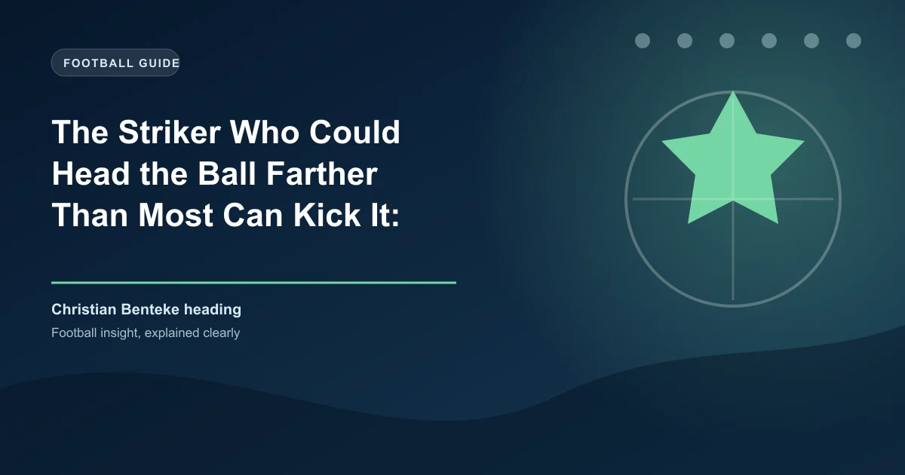

There is a moment in every football match that separates the ordinary from the extraordinary. It is the moment when a cross comes into the box, a striker rises above the defence, and connects with the ball using nothing but his forehead. Most headed goals are tap-ins, glancing finishes that rely on positioning more than power. But Christian Benteke's headers are different. They are missiles. They travel faster, farther, and with more ferocity than most players can generate with their feet. In an era where the art of heading is declining — with fewer crosses, more ground-based attacks, and growing concerns about head injuries — Benteke stands as a monument to what the human body can achieve when it combines raw power with perfect technique.
His heading ability is not just impressive; it is statistically extraordinary. And understanding how he developed it reveals a story of genetics, training, obsession, and a refusal to accept that the header of the ball is a dying art.
To understand Benteke's heading power, you need to understand the physics. A professional footballer can generate a ball speed of approximately 60-70 km/h with a side-foot pass. A long-range strike from a powerful shooter like Cristiano Ronaldo or Robert Lewandowski can exceed 100 km/h. A Benteke header, at its peak, reaches approximately 80 km/h. That is faster than most players can kick a ball with the inside of their foot.
The mechanics are remarkable. Benteke's heading technique involves a full-body movement that begins in his legs, travels through his core, and is transmitted through his neck and forehead. His vertical leap allows him to reach the ball at its highest point — typically 2.7 metres above the ground — giving him a height advantage over almost every defender in the Premier League. His neck muscles, which he has trained specifically for heading, generate the force needed to redirect the ball at speed. And his forehead, which is thicker and harder than average due to years of heading practice, provides a surface that maximizes energy transfer.
The result is a heading technique that produces power without sacrificing accuracy. Benteke does not just head the ball; he drives it. His headers have a trajectory that is flatter and faster than those of most strikers, making them harder for goalkeepers to read and react to. When the ball leaves his forehead, it does not arc gently toward the goal; it travels in a direct line, almost like a shot from open play.
Christian Benteke was born in Kinshasa, the capital of the Democratic Republic of Congo, in 1990. His family moved to Liège, Belgium, when he was five years old. His father, who had played football at a semi-professional level in Congo, recognized his son's athletic potential early and enrolled him in the youth academy at Standard Liège at the age of eight.
At Standard, Benteke's development was unusual. Most young strikers focus on footwork, dribbling, and finishing with their feet. Benteke did that too, but he also spent hours working on his heading. His coaches noticed early that he had a natural ability in the air — his timing was exceptional, his leap was explosive, and his neck muscles were stronger than those of most boys his age. They encouraged him to develop this strength rather than suppressing it, and by the time he was 16, Benteke was already the most dominant aerial threat in Standard's youth teams.
The training was specific. Benteke would stay after practice to work on heading drills with the club's technical coach. He would practice heading from crosses, from corners, from free kicks, and even from throw-ins. He would head the ball with his forehead, the top of his head, and the sides, developing the ability to direct the ball precisely regardless of the angle of the cross. He would do neck strengthening exercises — resistance training, neck bridges, and weighted neck curls — to build the muscle mass needed to generate power.
By the time he made his first-team debut at Standard in 2008, Benteke's heading ability was already exceptional. But it was his move to Genk in 2009 and then to Aston Villa in 2012 that brought his talent to the world's attention.
| Metric | Value |
|---|---|
| Height | 190cm (6'3") |
| Vertical leap | 84cm (elite level) |
| Peak header speed | ~80 km/h |
| Heading goals (Premier League) | 42 |
| Aerial duels won (career) | 58% |
| Career headed goals total | 67 |
Benteke's three seasons at Aston Villa (2012-2015) were the period that established him as one of the most dangerous heading threats in world football. In his first season, he scored 19 Premier League goals, 11 of which were headers. It was an extraordinary return for a player who was just 22 years old and in his first season in England.
The Premier League, with its emphasis on crosses, set pieces, and physical defending, was the perfect environment for Benteke's skill set. English defenders are accustomed to dealing with aerial threats, but Benteke was different. He was taller, more athletic, and more technically proficient in the air than almost anyone they had faced. His movement in the box was intelligent — he would drift to the far post, attack the near post, or hold his position in the centre, depending on where the cross was coming from. His timing was impeccable. He would leap at the exact moment the ball arrived, meeting it at the highest point of his jump with his forehead.
The goals were spectacular. There was the header against Norwich City that travelled over 25 metres from the edge of the six-yard box into the top corner. There was the header against Chelsea that beat two defenders and left the goalkeeper rooted to the spot. There was the header against Manchester City that came from a corner and travelled at such speed that the goalkeeper did not even attempt a save. Each goal reinforced the same message: Benteke's heading was not just good; it was superhuman.
In 2015, Liverpool paid £32.5 million for Benteke — a club record fee at the time. It was a statement of intent. Liverpool's manager, Jürgen Klopp, wanted a focal point for his attack, a player who could hold the ball up, bring others into play, and score goals from crosses and set pieces. Benteke, with his heading ability and physical presence, seemed like the perfect fit.
But Liverpool's style of play did not suit Benteke's strengths. Klopp preferred a pressing, counter-attacking system that relied on quick transitions and ground-based attacks. Benteke was a traditional number nine who thrived on crosses and aerial service. The mismatch was evident from the start. In his first season, Benteke scored just 10 goals in 42 appearances — a decent return, but well below what was expected of a £32.5 million striker.
The frustration was visible. Benteke would find himself isolated in the box, waiting for crosses that rarely came. His teammates preferred to play short passes, work the ball into the box on the ground, and create chances through movement rather than delivery. Benteke's heading ability, which had made him one of the most feared strikers in the Premier League at Villa, was suddenly irrelevant. He was a hammer in a toolbox that only needed screwdrivers.
After just one season, Liverpool sold Benteke to Crystal Palace for £27 million. It was a significant loss, but it freed Benteke to return to a system that suited his strengths. And at Palace, under managers who understood how to use him, Benteke rediscovered the form that had made him a £32.5 million player.
Benteke's time at Crystal Palace (2016-2022) was a mixed bag. He had seasons of brilliance, where his heading ability produced some of the most spectacular goals in Premier League history. He also had seasons of frustration, where injuries and inconsistency limited his impact. But across six seasons at Selhurst Park, Benteke established himself as one of the Premier League's most reliable aerial threats.
The numbers were impressive. In his best seasons at Palace, Benteke averaged more aerial duels won per 90 minutes than any other striker in the Premier League. His heading accuracy — the percentage of headed shots on target — consistently ranked in the top five among all Premier League players. And his headed goals, when they came, were often the difference between victory and defeat.
One goal, in particular, stands out. In a match against West Ham United in 2019, Benteke received a cross from the right wing, rose above two defenders, and headed the ball from 18 yards into the top corner. The ball travelled at an estimated 82 km/h and covered a distance of 25 metres. The goalkeeper, Łukasz Fabiański, later said he did not even see the ball until it was in the net. It was, by any measure, one of the most powerful headers ever recorded in Premier League history.
Benteke's aerial dominance exists in a sport that is increasingly moving away from heading. Research into chronic traumatic encephalopathy (CTE) has raised concerns about the long-term effects of heading the ball. FIFA and the Premier League have introduced guidelines limiting heading in youth training, and many clubs are reducing heading drills for senior players. Benteke, who has continued to train his heading throughout his career, represents a dying breed: a specialist in an art that the sport is slowly abandoning. For more on how football is evolving, check our tactical analysis section.
Benteke's heading power is not just about strength; it is about biomechanics. When he jumps for a header, his body follows a precise sequence of movements that maximizes energy transfer. His legs generate the vertical force needed to reach the ball. His core stabilizes his body in the air, preventing rotation that would reduce power. His neck muscles drive his forehead forward, creating the impact force. And his forehead, which is angled slightly downward, directs the ball toward the goal rather than upward or wide.
Sports scientists who have analyzed Benteke's heading technique describe it as "optimal." His jump timing means he contacts the ball at the peak of his leap, when his body is stationary and his neck muscles can generate maximum force. His head position means the ball contacts the strongest part of his forehead, just above the hairline. And his neck extension — the backward movement of his head before the forward snap — generates additional velocity through a whip-like motion.
The result is a heading technique that produces power without sacrificing control. Benteke's headers are not just hard; they are accurate. He can direct the ball to specific areas of the goal, using different parts of his forehead to create different trajectories. A header to the near post requires a different technique than one to the far post, and Benteke has mastered both.
How does Benteke compare to other famous headers of the ball?
Benteke's headed goal frequency is significantly higher than both Crouch and Shearer.
For football bettors, Benteke's aerial dominance offers a specific edge. When analysing matches, consider the aerial threat of the teams involved. Teams that produce a high volume of crosses, corners, and set pieces are more likely to score headed goals when they have a striker with Benteke's ability in the box. Conversely, teams that rely on ground-based attacks may struggle to exploit the aerial advantage, even with a dominant header of the ball.
The betting markets reflect this. The "anytime goalscorer" market for Benteke is consistently undervalued when Crystal Palace play at home, where they produce more crosses than most Premier League teams. The "header to be scored" market, available at some bookmakers, offers excellent value when Benteke's team faces a defence that struggles aerially. For advanced betting strategies that incorporate aerial data, check our comprehensive guides.
Benteke's career is a reminder that football's most basic skills — heading, tackling, passing — still have value in a sport that is increasingly dominated by data and tactical sophistication. In an age where strikers are expected to press, dribble, and create, Benteke has proved that the old art of heading the ball remains one of the most effective weapons in football. His headers are not just goals; they are statements about what the human body can achieve when it is trained, disciplined, and focused on a single objective.
Want to bet on heading goals and aerial duels? Get free football predictions updated daily, including set-piece analysis and aerial threat assessments.
Generate optimized accumulator combinations from today's AI-powered predictions. Set your target odds and get instant ticket suggestions.
Free Ticket Builder →